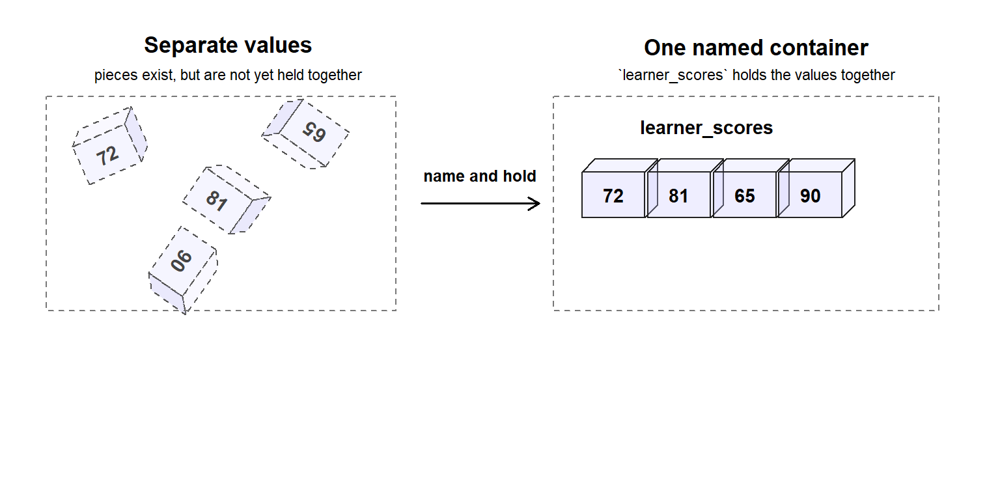

Code
1 + 1
#> [1] 2Leo has now met the R ecosystem.
He has seen the console respond. He has typed small instructions. He has stored values under names. He has also learned that serious work should not depend on memory alone.
Now a quieter question appears.
What exactly is R working with when it runs code?
When R evaluates 1 + 1, it is working with values. When R stores "Leo" under a name, it is storing data that can be found and reused later. When R works with a table, that table is still built from smaller pieces underneath.
Before there are data types, there are values.
Before there are larger data structures, there are containers that hold connected values together.
Before there is analysis, there is material that R must store, inspect, compare, and reuse.
This chapter answers the question left by Chapter 2: what is R working with when it runs code?
The answer begins with small pieces of data, the names that help R find them, and the containers that allow those pieces to exist together.
Chapter 2 introduced the first working map of the R ecosystem.
R runs the instructions. The console gives direct contact with R. RStudio gives a better place to organise that work. A script preserves instructions so that they can be used again.
That was the first practical contact.
Chapter 3 turns the attention inward. Instead of asking where the work happens, it asks what the work acts on.
A command is not important only because it runs. It is important because it acts on something. That something may be a number, a word, a truth value, a missing signal, or a named object that holds one of these pieces.
This is the first shape of R thinking:
instruction
↓
acts on data
↓
produces a resultThe instruction matters. The result matters. But the data beneath the instruction matters first.
Every R command has material underneath it.
In this line, the material is two numbers:
1 + 1
#> [1] 2In this line, the material is a piece of text:
print("Hello R")
#> [1] "Hello R"In this line, the material is stored under a name:
learner_name <- "Leo"
learner_name
#> [1] "Leo"The code looks different in each example, but the underlying idea is the same. R is receiving values it can inspect, store, and transform.
A serious beginner should learn to pause at this point. Do not only ask, “What command should I use?” Ask first, “What material is this command using?”
That question will protect the reader later. Many R errors come from using the right-looking command on the wrong kind of material.
The smallest useful idea in this chapter is the value.
A value is a piece of data that R can hold and work with. It may look like a number, a word, a label, a truth signal, or a special signal such as missingness.
For now, the important point is not the formal category of each value. That comes in Chapter 4. The point is smaller and more foundational: R must first have pieces of data before it can do any meaningful work.
42
#> [1] 42"London"
#> [1] "London"TRUE
#> [1] TRUEEach line gives R one piece of data.
These pieces do not yet form a dataset. They are not yet a table. They are the basic material that later commands will compare, combine, store, summarise, and transform.
In this chapter, “atom” is a beginner’s mental model, not a full technical lecture on R’s internal object system.
The point is simple: before there is a dataset, there are values. Before there is analysis, there are pieces of data that R must hold, inspect, compare, and reuse.
A single value can be useful, but it becomes more useful when R can refer to it again.
That is where names enter the picture.
score <- 72
score
#> [1] 72The value is 72.
The name is score.
The assignment arrow <- tells R to keep the value under that name.
This is not yet a full lesson on assignment or environments. It is a first operational habit: when a value has a name, it can be reused.
score + 5
#> [1] 77The name gives R a way to find the value again.
A name is not the value itself. It is a label that points R back to the value.
This distinction matters because beginners often think the name and the value are the same thing. They are connected, but they are not identical.
In R, a simple named object can hold a value that the code will use later.
72
↓
score <- 72
↓
score is now a named object R can reusestudy_hours <- 6
study_hours
#> [1] 6Now R can use study_hours in a later instruction:
study_hours * 2
#> [1] 12The result is not produced because the name is special. It is produced because the name helps R find the value.
When a value is assigned to a name, R can refer to that value again by using the name.
At this stage, that is enough. Later chapters will explain more about objects, structures, and how R organises larger pieces of work.
A value can stand alone. Several values can also be placed together.
For now, call that a container.
A container is a beginner’s way of imagining how several pieces can be held together so that R can work with them as a group.
learner_scores <- c(72, 81, 65, 90)
learner_scores
#> [1] 72 81 65 90This example uses c() to combine several values. The chapter does not need the formal theory yet. The main idea is enough: R can hold more than one value under one name.
value
↓
container
↓
larger structureThis idea prepares the ground for later chapters.
Chapter 4 will ask what kind of values these are. Chapter 5 will ask what shapes values can take when they are organised into larger structures.
For now, the reader only needs the first map:
values can stand alone
values can be named
values can be held togetherHere is a visual way to imagine the previous example. The figure below shows the shift from separate values to one named container.
This picture is not teaching a formal data structure yet. It is only a mental model: values can exist as separate pieces, but a name can also point to several connected values held together.

As shown in Figure fig-learner-scores-container, the point is not that loose values are wrong. The point is that a name can help R hold related values together and reuse them.
In this picture, the values 72, 81, 65, and 90 first appear as separate pieces. Once they are held under the name learner_scores, they become easier to refer to as one connected object. Later, Chapter 5 will explain the formal structures behind this idea. For now, the important lesson is simple: one name can point to more than one piece of data.
The name learner_scores points to several connected values. Each value sits in its own cell, but the container allows R to hold the values together and use them again. Later, Chapter 5 will explain the formal structures behind this idea. For now, the important lesson is simple: one name can point to more than one piece of data.
single value
↓
named object
↓
several connected values
↓
larger data workThat map helps prevent a common beginner mistake. Code is not just symbols on the screen. It is a set of instructions acting on values that R can find, hold, and inspect.
Not every value looks like an ordinary number or word.
Real data work contains gaps, impossible calculations, infinite results, and absence. R has special signals for some of these situations.
The most important ones at this stage are:
NANaNInfNULLThese are not decorative details. They matter because serious data work depends on knowing when a value is present, missing, impossible, infinite, or absent.
A beginner who ignores special values may trust results too quickly.
Before running the next code, pause and predict which checks will return TRUE.
is.na(NA)
#> [1] TRUE
is.nan(NaN)
#> [1] TRUE
is.infinite(Inf)
#> [1] TRUE
is.null(NULL)
#> [1] TRUEThe purpose is not to memorise these functions immediately. The purpose is to practise inspection before trust.
R can check what kind of signal it is seeing. The reader should learn to ask R for evidence rather than guessing.
NA means a value is missing.
It often appears when a value was expected but is not available.
age <- NA
is.na(age)
#> [1] TRUENaN means “not a number.”
It usually appears when a numerical calculation has produced an undefined result.
not_a_number <- 0 / 0
not_a_number
#> [1] NaN
is.nan(not_a_number)
#> [1] TRUEInf means infinity.
It can appear when a calculation produces a value beyond ordinary finite limits.
infinite_value <- 1 / 0
infinite_value
#> [1] Inf
is.infinite(infinite_value)
#> [1] TRUENULL needs special care.
It is not a missing value inside a column in the same ordinary way that NA is. NA usually means a value was expected but is missing. NULL usually means there is nothing there: no value, no component, or no object content in that place.
empty_value <- NULL
is.null(empty_value)
#> [1] TRUEThis distinction will become more useful later. For now, it is enough to keep the idea clear:
| Signal | What it usually means | Plain reading |
|---|---|---|
NA |
A value was expected but is missing | “Something should be here, but it is unavailable.” |
NaN |
A numerical result is undefined | “This calculation did not produce a valid number.” |
Inf |
A numerical result is infinite | “This value goes beyond ordinary finite limits.” |
NULL |
No value or content is present | “There is nothing here.” |
A printed result can look simple while hiding an important signal.
printed result
↓
hidden signal?
↓
inspect before trustFor example:
scores_with_missing <- c(72, 81, NA, 90)
scores_with_missing
#> [1] 72 81 NA 90The missing value may look like a small detail. It is not small when calculation begins.
mean(scores_with_missing)
#> [1] NAR returns NA because one of the values is missing. This is not a failure in R’s behaviour. It is evidence about the data.
R can calculate the mean only when the missing value is handled deliberately.
mean(scores_with_missing, na.rm = TRUE)
#> [1] 81This command does not “fix” the missing value. It tells R to remove missing values before calculation.
This small example introduces a professional habit:
inspect the material before trusting the result.
A result is only as trustworthy as the data signals that produced it.
It may be tempting to jump straight into formal labels: numeric, character, logical, and so on.
That will come next.
But a learner who jumps to labels too quickly may miss the deeper idea. R is not only storing categories of data. It is working with pieces, names, simple containers, and signals.
The question in Chapter 3 is not yet:
What type of data is this?
The question is:
What is the piece of data, where is it being held, and what signal is it giving?
Once that question is clear, data types become easier to understand.
At this point, the learner does not need to know formal data structures. There is no need yet to master vectors, lists, matrices, data frames, coercion, factors, or dates.
The expected understanding is smaller and more important:
NA, NaN, Inf, and NULL carry signals.This chapter does not teach formal data types or data structures.
It prepares the mental ground for them. Chapter 4 will ask what kind of values R is holding. Chapter 5 will ask how values can be organised into larger structures.
By the end of this chapter, the learner should be able to explain that R does not work with vague code symbols. It works with values, names, simple objects, containers, and signals.
The chapter has introduced a small but important change in thinking:
Do not only read the command.
Inspect the data beneath the command.That habit will return throughout the book.
The question left by Chapter 2 was:
What exactly is R working with when it runs code?
Chapter 3 answered:
R works with values, names, containers, and special signals.
But another question now appears.
If data comes in pieces, what kind of pieces are they?
Some values behave like numbers. Some behave like text. Some behave like truth signals. Some look like dates. Some appear simple but behave differently from what the beginner expects.
Chapter 4 begins there.
Chapter 3 showed that R works with values before it works with larger datasets.
Chapter 4 asks the next question:
what kind of value is R holding, and why do different values behave differently?